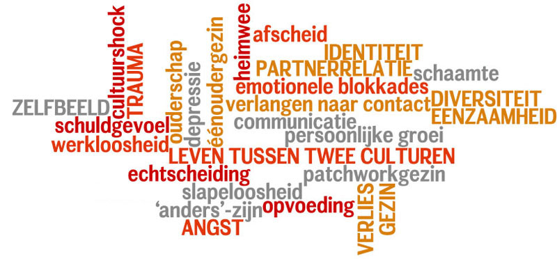

Over Jou
Gestalttherapie kan jou helpen als je:
- jezelf én de ander wil leren kennen
- wil leren omgaan met boosheid en verdriet
- 'het' wel zelf, maar even niet alleen wil doen
- op zoek bent naar tevredenheid en rust
- belang stelt in de noden van je omgeving
- je spontaniteit wil herontdekken
- meer opwinding wil ervaren
- beter contact wil maken
- je angsten onder ogen wil zien

- aandacht wil hebben voor je spanning, stress, lichamelijke klachten, lusteloosheid of depressiviteit
- je wil leren uiten
- je leven zin wil geven
- wil voelen wat je zegt
- wil zeggen wat je voelt
- wil zeggen wat je te zeggen hebt
- je eigen verantwoordelijkheid wil nemen
- je eigen keuzes wil maken
- je kracht wil voelen en tot uitdrukking brengen
Doelgroepen
1.
→ Jongvolwassenen
→ Individuen die zich bevinden in de vroege-/ midden- of late-volwassenheid
2.
→ Samengestelde gezinnen
3.
→ Koppels
- bi-culturele of 'gemengde' koppels
- gescheiden koppels (SCHIP-methodiek)
(Voor relatietherapie werk ik indien mogelijk samen met een mannelijke co-therapeut. Op die manier zijn wij 'meerzijdig partijdig'. Tevens komt de manier waarop mannen kijken én de manier waarop vrouwen kijken ten volle aan bod.)